For sales people, SM Projects and GM / DGM · testing stage · https://dimo-lighting-ops.vercel.app
What it doesThe wizard builds the win probability of a project from who decides, how strong our product is and where the competitors stand, instead of a single number typed by hand. It shows how the number is built, warns when something is missing and tells you what to do next. Button names look like this; menu paths like Projects → project → Open the wizard.
Testing stageFor now each sales person chooses per project whether to enter the win probability by hand or with the wizard. Both figures are kept, so SM Projects and the GM can compare which one predicts the result better before the wizard becomes the standard.
1The formula in one line
Win probability = Go (the project goes ahead) × Get (we win it if it goes ahead)
Go comes from funding, approvals and the project stage (step 1).
Get compares us with each competitor across four pillars – Contractor, Consultant, Product and Client. The decision type sets how much each pillar weighs (step 1); the people map (step 2), product scores (step 3) and competitor scores (step 4) fill them in.
Get is then reduced if we have no control of the people, if a veto holder is not with us, or a hard cap applies (e.g. the final approver is against us → max 10%).
Confidence shows how much of the map is verified rather than assumed or unknown.
2Switch the wizard on for a project
Open Projects → tap the project.
Tick ✓ Use the Win Probability Wizard. The tick is per project – use it for your top 3–5 projects first.
Tap Open the wizard. The last wizard score and its date are shown beside the button.
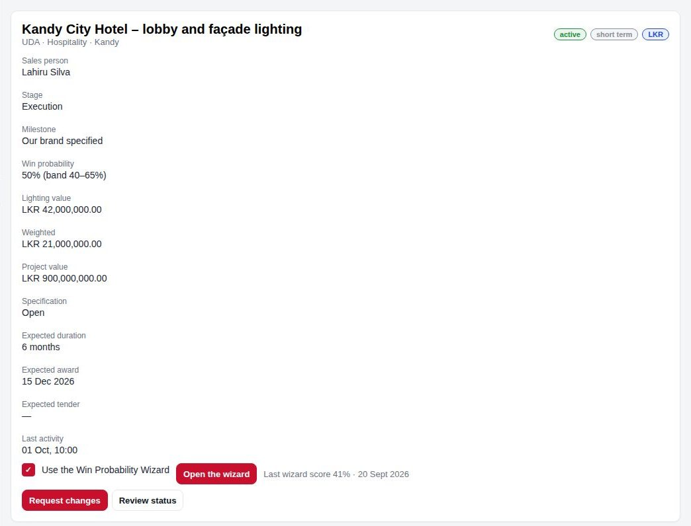
Project page – the wizard tick, “Open the wizard” and the last wizard score.
After a visitWhen you finish a visit on a project that has the tick on, the app asks “Update the win probability?” and offers Open the wizard instead of the manual % box.
3The wizard screen and the live picture
The card at the top stays visible on every step and updates as you tap:
Wizard win – the final %. Go and Get – its two parts. Confidence – green when well verified, amber or red when much is assumed. Expected value – lighting value × wizard %.
Ring – the wizard %; the black tick marks the project’s current % (manual or approved).
As you change it – a small line of how the % moved with each change in this session, with “▲ +2 pts last change”.
Pillars – for each pillar, our strength (blue) against the best competitor (orange) and its weight. A pillar not yet known is faded; a pillar not on the project shows “not on this project”.
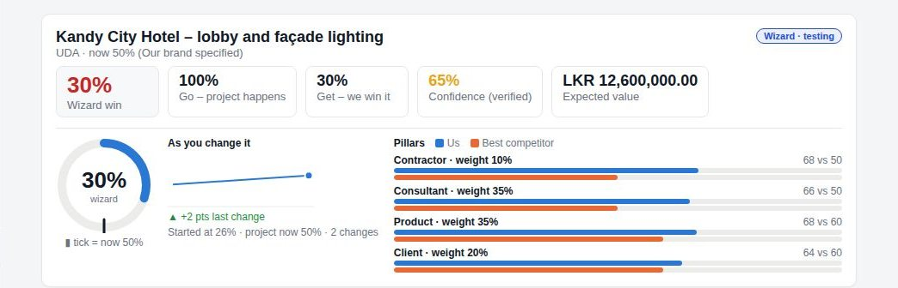
After two changes (project stage moved to Tender, then Construction) the wizard rose from 26% to 30%.
The six steps are along the tabs: 1 Project2 People3 Product4 Competitors5 Gut feel6 Result. You can jump between them at any time. The map is kept when you save a score, so next time you only update what changed.
4Step 1 – Project: how the decision is made
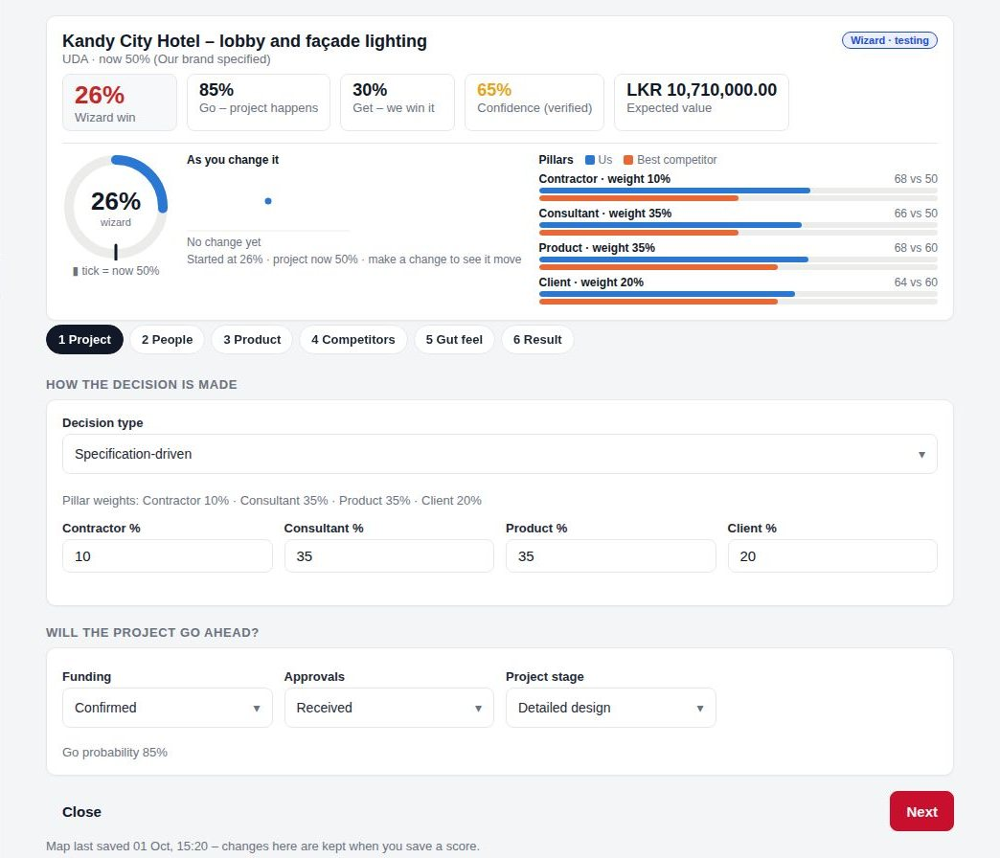
Step 1 – decision type, pillar weights and the Go factors.
Decision type – pick who really decides the lighting package. It sets the pillar weights (you may adjust them; they should add to 100):
Decision type
Contractor
Consultant
Product
Client
Not yet known
25
25
25
25
Specification-driven (consultant specifies)
10
35
35
20
Price-driven or tender
20
15
35
30
Owner-driven
15
15
20
50
Design and build (contractor designs and buys)
40
15
25
20
Will the project go ahead? – Funding (Confirmed / Likely / Uncertain), Approvals (Received / Pending / Not started) and Project stage (Construction / Tender / Detailed design / Concept). These give the Go %.
5Step 2 – People: map who decides
For each people pillar (Contractor, Consultant, Client) list everyone who can affect the decision on our package. The wizard pre-fills people from the project’s stakeholders, contacts and visits.
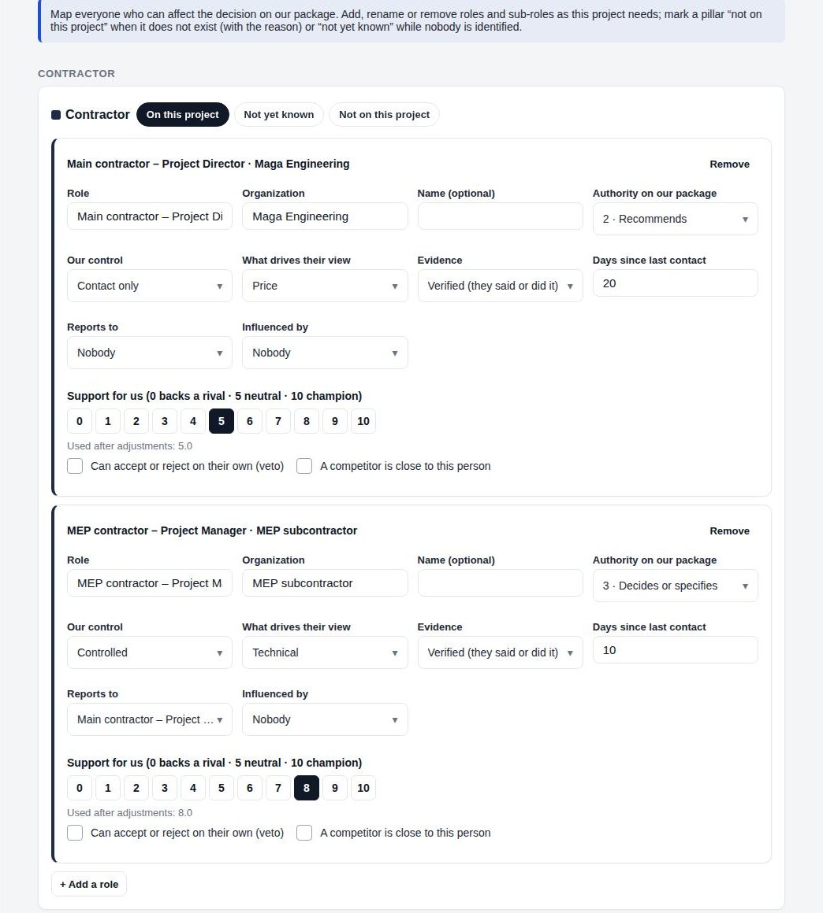
Contractor pillar with two people. Every field changes the score.
Field
What to enter
Role / Organization / Name
The position (e.g. “MEP consultant – Electrical Engineer”), the company, and the name if known.
Authority on our package
4 · Final approval, 3 · Decides or specifies, 2 · Recommends, 1 · Influences. Higher authority weighs more.
Our control
Controlled (we can get them to act), Contact only, No access. Low control lowers the result.
What drives their view
Price, Technical, Past experience or Relationship – used for the “What to do next” advice.
Evidence
Verified (they said or did it) or Assumed. Assumed lowers confidence.
Days since last contact
Over 30 days for a decision-maker triggers a “Visit …” action.
Reports to / Influenced by
Links people together – a supporter’s boss or influencer pulls their score.
Support for us (0–10)
0 = backs a rival, 5 = neutral, 10 = champion. “Used after adjustments” shows the value after evidence, access and influence.
Veto / competitor close
Tick veto if they can accept or reject alone. Tick a competitor is close if a rival has a relationship with them.
Pillar state – not every project has every pillar
Each pillar has three choices: On this projectNot yet knownNot on this project.
Not yet known – nobody identified yet. The pillar counts as neutral (50%) and confidence drops.
Not on this project – e.g. a supply-only order with no contractor. The weight is shared among the other pillars. A reason is required; SM Projects sees it.
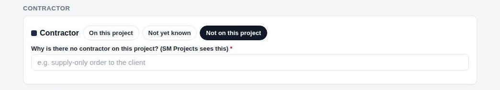
Contractor marked “not on this project” – its weight is shared out and a reason is asked for.
Add, rename or remove roles
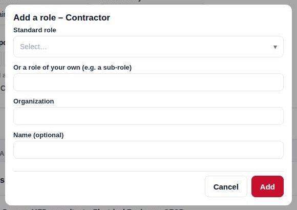
+ Add a role
Tap + Add a role under a pillar. Pick a standard role or type your own (e.g. a sub-role like “Site engineer – lighting”), then the organization and name.
Rename any role by editing its Role field.
Remove drops a role. Removing someone with authority 3 or 4 asks for a reason – it appears in the review for SM Projects.
6Step 3 – Product against the best competing product
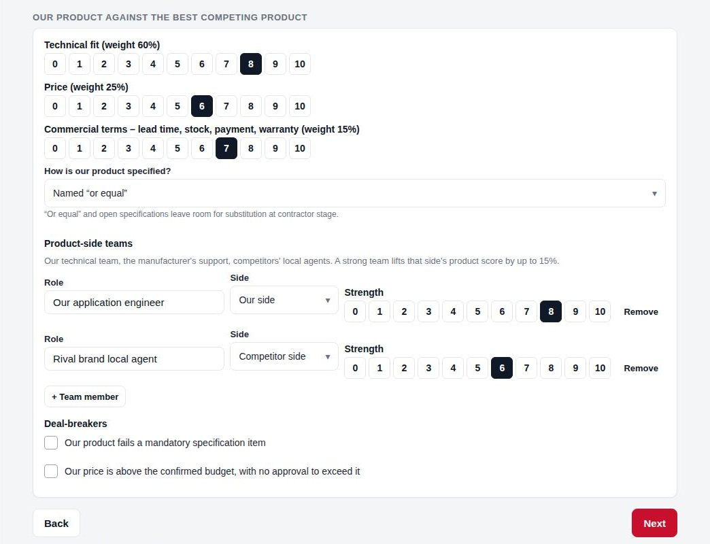
Step 3 – product scores, specification, product-side teams and deal-breakers.
Score Technical fit (60%), Price (25%) and Commercial terms – lead time, stock, payment, warranty (15%) – from 0 to 10.
How is our product specified?Named brand only is strongest; Named “or equal” and Open leave room for substitution at contractor stage.
Product-side teams – add our application engineer, the manufacturer’s support, a rival’s local agent, with strength 0–10. A strong team lifts that side by up to 15%.
Deal-breakers – tick only if true: failing a mandatory spec item or being above the confirmed budget without approval sets the result to 0%.
7Step 4 – Competitors
Add each competing brand and score its position in each pillar from 0 to 10. If you don’t know, leave 6 – assume they are working the people you can’t reach. Use + Add a competitor or Remove.
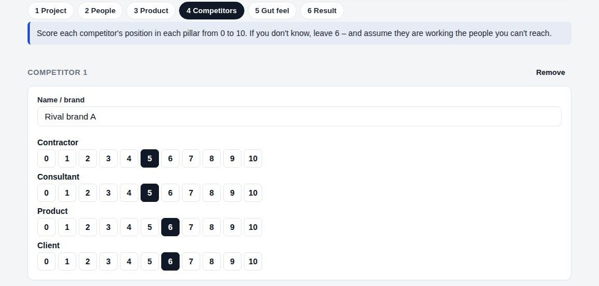
Competitor 1 scored per pillar.
8Step 5 – Gut feel
Before looking at the result, tap the % you would give this deal. It does not change the wizard – it is kept for comparison, and a gap of 20 points or more is flagged so you re-check the map. Then tap See result.
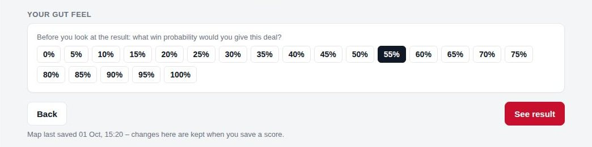
Step 5 – your gut feel.
9Step 6 – Result
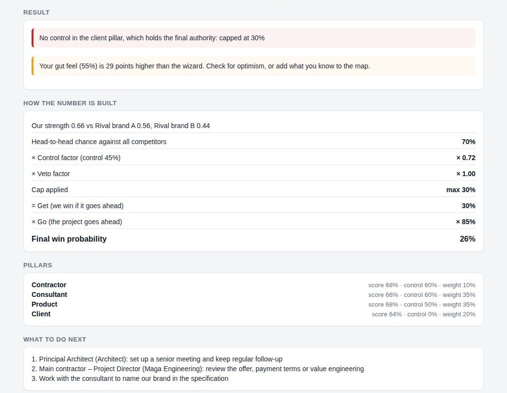
Result – warnings, how the number is built, pillars and what to do next.
Red / amber notes – caps and warnings. In this example the owner (final approval) is in the client pillar where we have no control, so Get is capped at 30%; and the gut feel is 29 points above the wizard.
How the number is built – head-to-head chance against all competitors × control factor × veto factor, the cap, then × Go.
Pillars – our score, our control and weight in each.
What to do next – up to three actions from the map (e.g. senior meeting with the architect; review the offer for the price-driven contractor; get the brand named in the specification). Put them in your next weekly plan.
Reading this exampleThe fastest way up is not a better price – it is getting access to the owner. Once we have contact or control in the client pillar, the 30% cap is lifted.
10Use the result
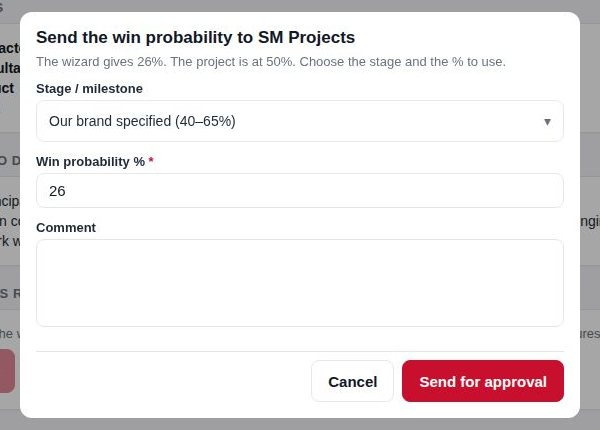
Sales: send to SM Projects
Sales people – tap Send 26% for approval …. Choose the stage/milestone, keep or adjust the %, add a comment and tap Send for approval. It goes to SM Projects as a project change request.
SM Projects / GM – the button reads Set 26% … and updates the project directly.
Save score only keeps the score for the trial without changing the project %.
Score history at the bottom lists every score – wizard %, the % at the time, chosen %, and whether it was sent or set.
SM Projects reviewing a requestThe request shows the wizard %, the reason, and any flags: pillars marked not on the project (with reason), removed decision-makers (with reason), low confidence, and big gaps between wizard, gut feel and the current %.
11Wizard trial page (SM Projects and GM / DGM)
Projects → Wizard trial compares the two methods:
Projects scored, scores in total, the average gap wizard vs manual, and how many scored projects are now won or lost.
Which was closer to the result – by band (under 40%, 40–69%, 70% and over). A good forecast wins about as often as its %. Reliable after about 30 decided projects.
Projects (latest score) – wizard, manual then, gut, confidence, now, and how it was used. Tap a row to open the project.
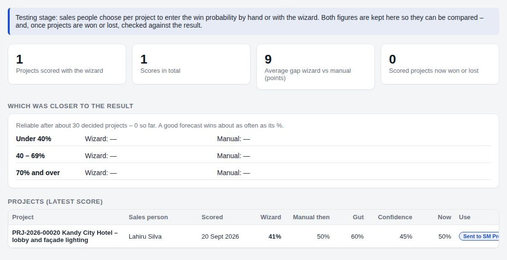
Wizard trial page.
12On the phone
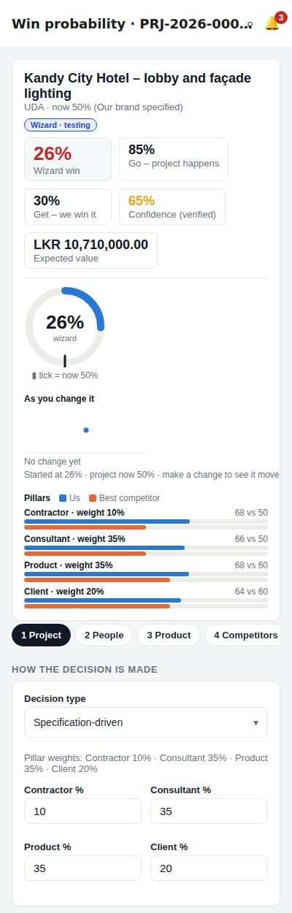
Wizard on a phone
The wizard works the same on the Android app and the phone browser. The live card stacks above the steps; scroll the tab row sideways to reach Gut feel and Result.
Good practice
Start with your top 3–5 projects, and update them after each important visit.
Use Not yet known when you haven’t found the person yet; use Not on this project only when that pillar really doesn’t exist.
Mark Verified only when the person said or did something that shows it.
Don’t move numbers to reach a % you want – the gut-feel gap and the trial page show it. Fix the map with facts instead.
Act on What to do next – it is the shortest route to a higher %.